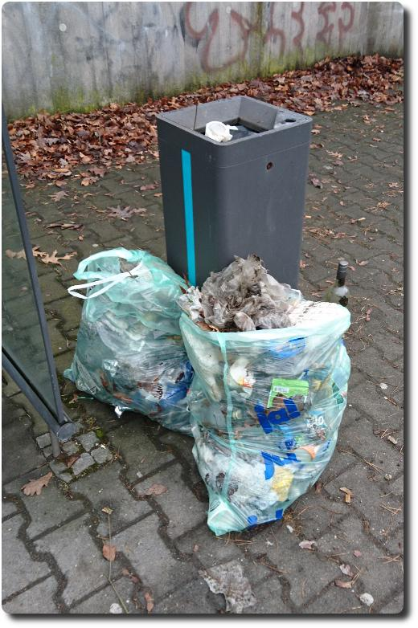

Sonntags-Müllsammelaktion
Zum Feierabend stehe ich regelmäßig an dieser Bushaltestelle in Frankfurt, Gateway Gardens. Und dort sah es bis heute aus, wie auf einer Müllhalde: Flaschen, Dosen, Coffee-to-Go-Becher in Massen, diverse Verpackungen. Bis heute, denn das wurde mir jetzt zu viel. Also habe ich mich auf mein Rad geschwungen und bin mit zwei Müllsäcken, einer Harke und Handschuhen bewaffnet, hin, um da auszumisten.
Meine beiden Müllbeutel wurden ordentlich voll. Das Verrückteste, was ich fand, war ein grüner BH. Aber auch ein Regenschirm war dabei. Und Unmengen Coffee-to-Go Deckel. Der Wahnsinn! Leute, hört auf, diesen Dreck in die Gegend zu werfen!
So. F√ºr eine Weile wenigstens sieht es hier wieder ganz ordentlich aus. üòä
